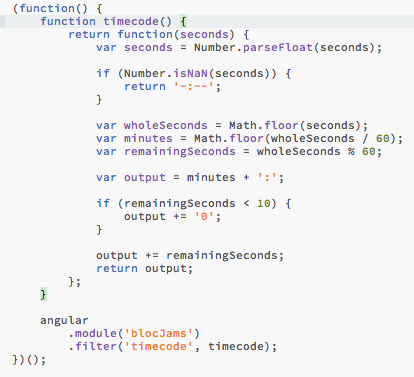

BlocJams

Summary
While working and playing, we like to listen to music from our mobile devices and computers. BlocJams allows users to stream music from its album library.
Explanation
BlocJams allows users to scroll through the library's album listings. The user can select an album to view a list of its tracks and play its music. Users have the ability to play, pause, and skip songs. My role in this project was to follow step-by-step instructions to learn how to rewrite original jQuery code into AngularJS while implementing a new file organization system.
Problem
The user stories I was given provide the individual steps to accomplish this project.
- Bootstrap AngularJS to my original version of BlocJams.
- Configure routing and states.
- Implement controllers for each view.
- Create a service to handle song playback.
- Write a directive to control song position and volume sliders.
- Add a time code filter to display time in minutes and seconds.
Solution
I used UI Router to display the slide bar so that I could reference it twice in the music player function bar without repeating code. I created a controller for each of the three main views of this project to hold functions for each page. In order to play the music correctly using Buzz Library, the song length needed to be saved in total number of seconds rather than m:ss format. To account for this I created a filter that would receive the total number of seconds and format it in the m:ss format for better display.
Results
In addition to the completing the user stories I also added functionality to allow the user to mute the volume.
Conclusion
The MVP of this project was successful. In its current form it is very limited. Future improvements for this project include user accounts to allow for multiple users' preferences, custom playlists, and ratings. Another useful improvement would be the ability to search the music library for a certain artist, album, or song.